PROJECT DETAILS
Project type: Personal project.
My roles: Researcher - Interviewer - UX design - Visual design - Prototype.
Duration: September 2022.
Tools: Figma.
How-Do-I is a cross-platform app made to provide teenagers on and after high school with tutorials and assistance in technical skills they may require in their lives.
THE PROBLEM
In the competitive world, everyone wants to have the upper hand in situations they may face but lack the knowledge that schools does not teach and private tutors give for an expensive price and takes longer times for singular issues.
THE OBJECTIVE
How-Do-I is a platform of easy access with hundreds of tutorials, tips and assistance in several technical skills any teenager may need, provided in step-by-step lessons or full courses.
RESEARCH
The research objective is to find the needs and experiences of users with previous solutions foreign to the proyect, this process was done twice on the initial proposal of the app, through unmoderated interviews, this were the findings:
- Reputable information: Users are worried about the quality of the information, if it comes from a reliable source with certain degrees or a respectful background.
- Duration: Some users use their limited free time to learn, during lunch breaks, after side activities or weekends.
- Accessibility: The participation of users with disabilities is a possibility and they require ways to access those courses easily.
- Communication: Users want to know if there are ways to talk to someone who knows about the topic they want to know, in case they need help or more detailed explanations.
Personas + Process map
The results of the interviews helped in the development of two Personas. With them, for a better understanding of the situation, a process map following the steps taken by the users to register to any course.
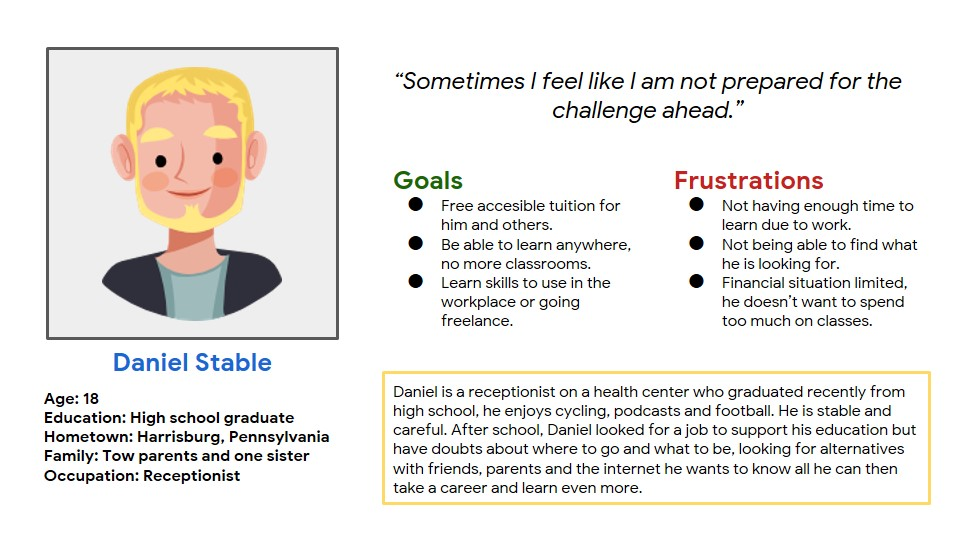 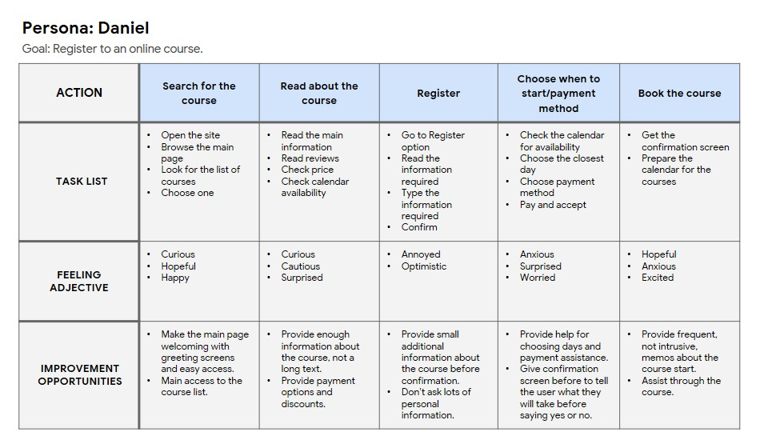 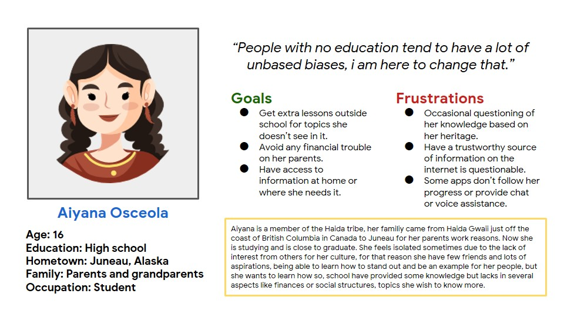 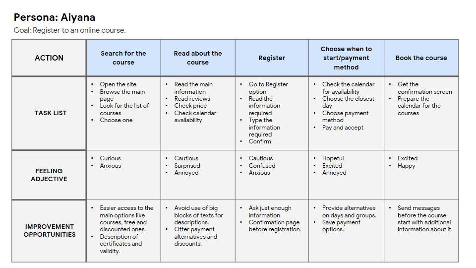 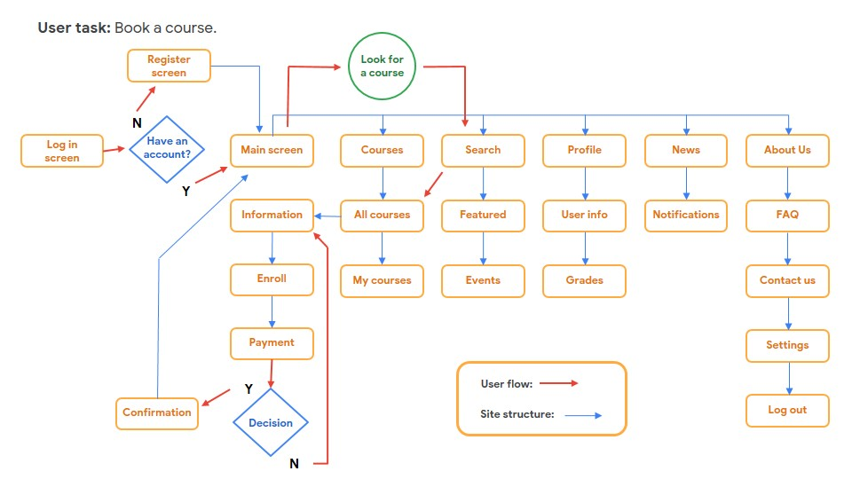Definition and ideation
After doing the research and interviews, the results showed the need to provide free education of high quality in modules and allow users to support the developers on their own terms:
- For all users the calendar of activities must be implemented so students and teachers can allocate their lessons.
- All users want to know the progress they have in their classes, that can be solved with helps like classes registry, completed courses, notifications and messages management.
- Most users want to know if the certificates given are valid for their careers and it is solved with accreditations and providing documentation that validates of the studies to a proffessional level.
How the website can improve the situation of:
DANIEL
- Offers free classes for him and others.
- He can learn anywhere he wants.
- Learn skills useful for his future choose in career.
AIYANA
- Receive additional lessons, easier to use as using the mobile phone.
- Prevent any extra load in her parents finances with free classes.
- She have access to information wherever she wants.
DEVELOPMENT: WIREFRAMES
DEVELOPMENT: USE SEQUENCE
Screenshots taken directly from Figma, showing the usability flow for users on different versions.
DEVELOPMENT: FINAL
Mobile version
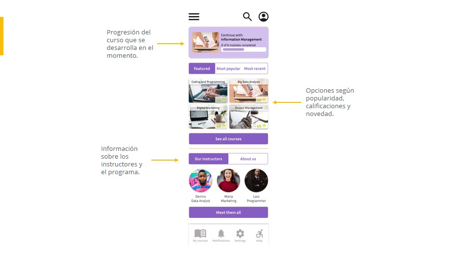 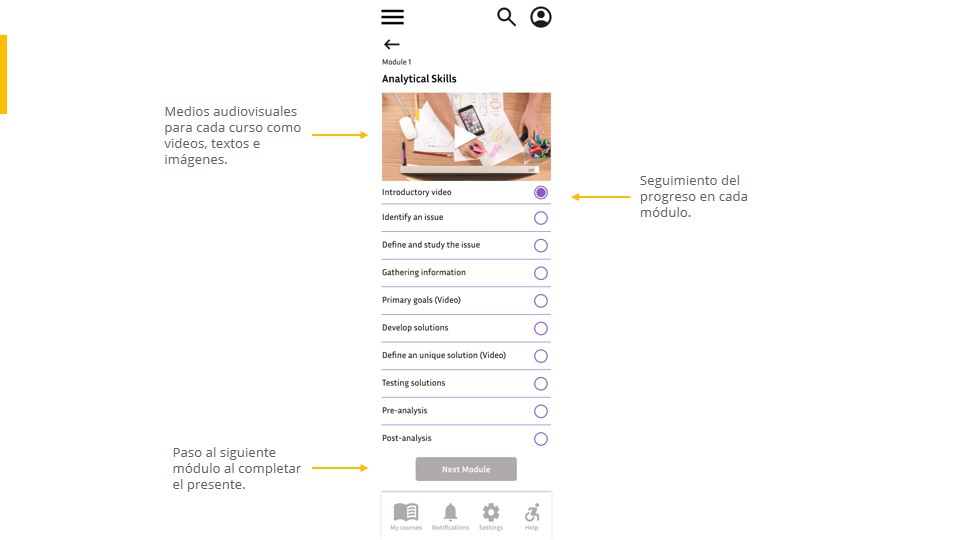 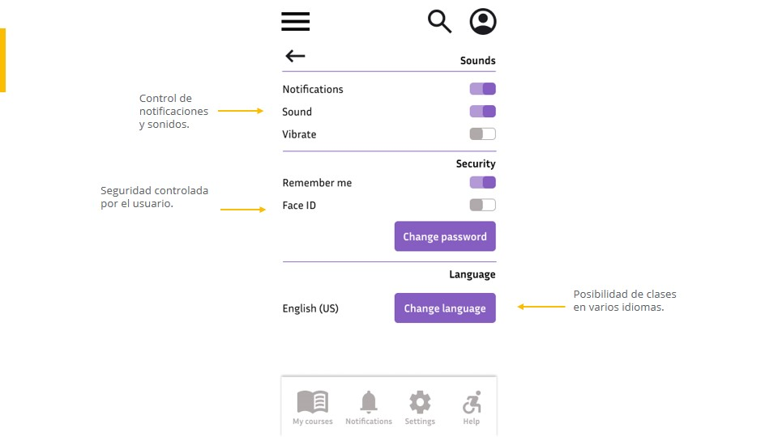Tablet version
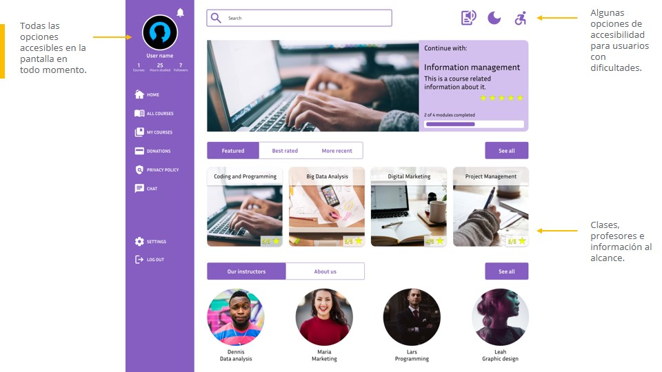 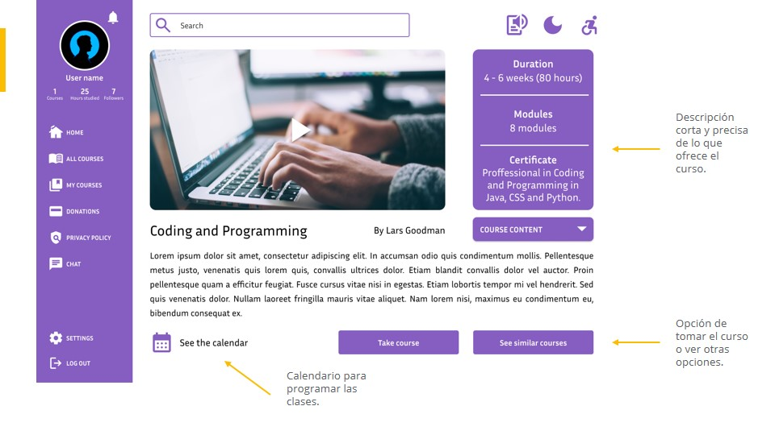 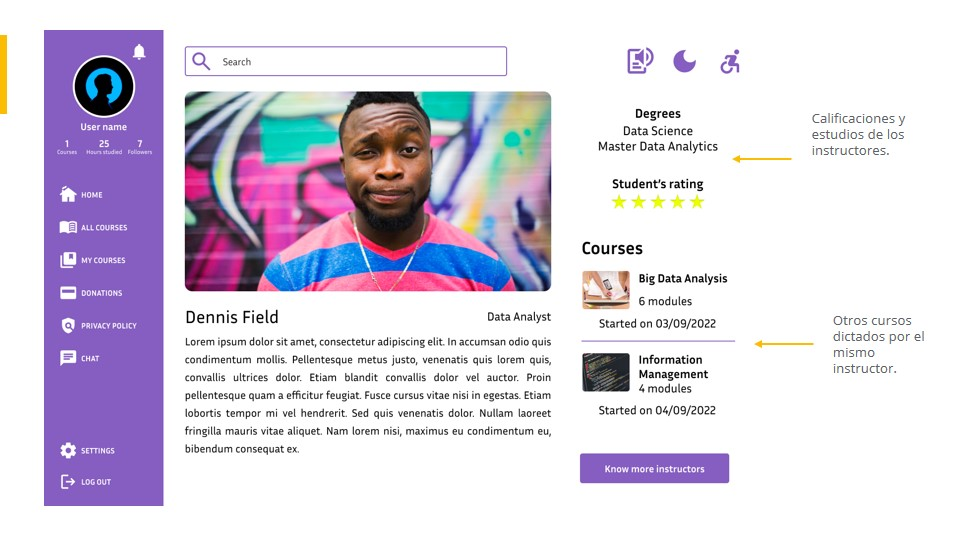Desktop version
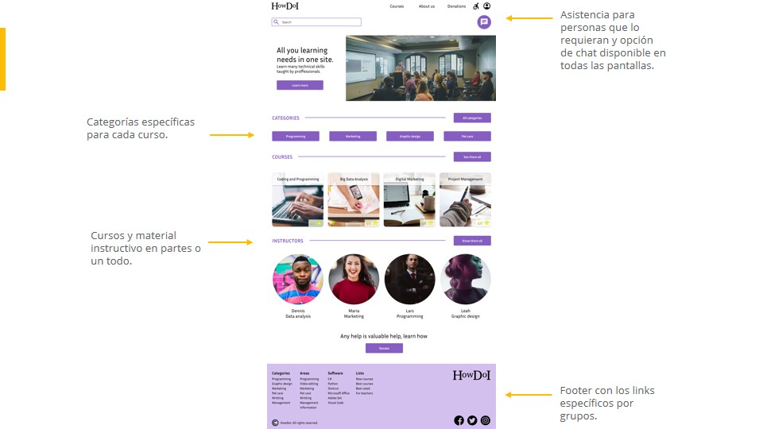 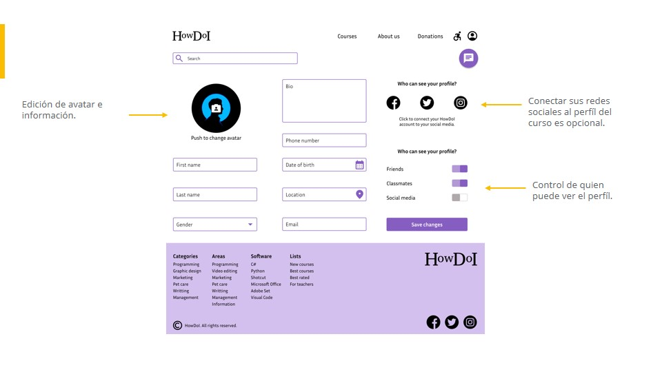 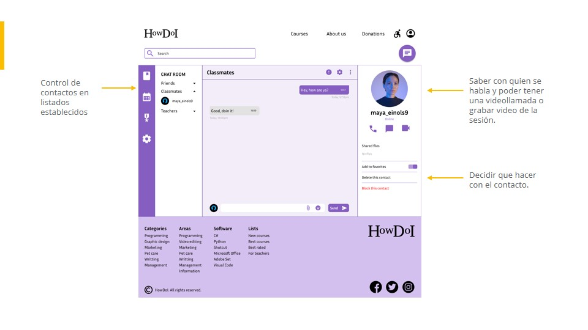DEVELOPMENT: NAVIGATION
Mobile version

Tablet version

Desktop version

Reflections
This was a long but educational process, the development of tools to help the public is an interesting experience since it explores the present needs, which were a lot and some requires more people working on them, is the designer's duty to provide all the help they can give, don't feel suffocated for what couldn't be done, give support even if it's just a little for a social cause it's always satisfactory and an important learning process.